Marks and Routes
Marks Routes
…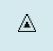………
Route Triangle Shipwreck MOB Create Route
First right-click on the chart and pick “Drop Mark”
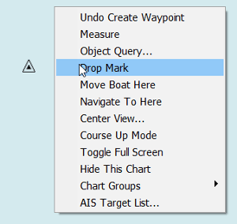
Then right click nearby and select “Undo Create Waypoint”
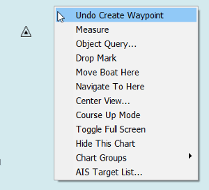
Or right-click on the Mark and select “Delete”
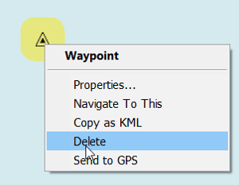
Marks
Are the basic points that are used for many things, such as creating routes, marking fishing spots, good anchorages or anything of interest.
Once a mark is created a focused right-click dialog becomes available, when clicking on the mark.
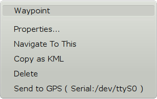
Create a mark
There are a few ways to directly create marks.
- at boat's position “Ctrl + O”.
- at cursor position “Ctrl + M”.
- at cursor position “Right-click” & press “Drop Mark”.
Marks are created at the start of each leg in a route, and one at the end of the route. More about routes a bit further down this page.
Marks created these ways will have a triangular icon, except for routes that uses a diamond, but no name.
The default icon, when creating a mark, is possible by changing the the value “DefaultWPIcon” in the opencpn.ini (config) file. Use the name of any available icon in the properties dialog.
More Detail In the [Settings/Others] section set the option DefaultWPIcon to one of:
empty, airplane, anchorage, anchor, boarding, boundary, bouy1, bouy2, campfire, camping, coral, fishhaven, fishing, fish, floating, food, fuel, greenlite, kelp, light, light1, litevessel, mooring, oilbouy, platform, redgreenlite, redlite, rock1, rock2, sand, scuba, shoal, snag, square, triangle, diamond, circle, wreck1, wreck2, xmblue, xmblue_, xmgreen, xmgreen_, xmred, xmred_, activepoint
values representing the default set of built-in icons or to a filename of any of your UserIcons, without the the path and .xpm extension. If you have a file called MyICON.xpm in the user icons folder, the value will be simply MyICON
Move a Mark
You can move the mark by left-click-dragging it around. To prevent accidental movement of marks go to Options>Display>Advanced and click the box “Lock Waypoints”.
Delete a Mark
You can delete a mark by right-clicking its icon, and selecting “Delete”.
Undo-Redo a Mark
There is an built in undo/redo buffer for creating, deleting or moving marks or waypoints. If you have just created, deleted or moved a mark the right-click dialog will have relevant entries. The undo/redo, for moving or creating marks, follows a straight time-line and is not tied to an individual mark.
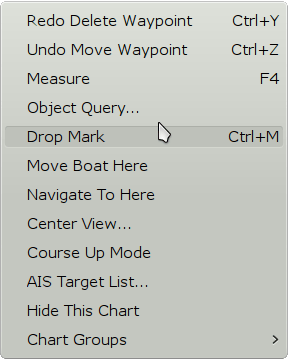
Right-click on a Mark
Above is a right-click menu just after moving a mark a few times and undoing the last move, and one mark was deleted, and then the deletion was undone. CTRL + Z and CTRL + Y works as hot-keys for undo/redo.
Mark Properties
All marks have properties that can be seen by right-clicking and pressing “Properties”, or even simpler just double click the mark.
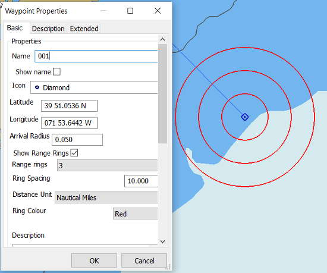
Read all about the properties dialog in Extended MarksMarks can be manipulated through the Route & Mark Managers Waypoints tab as well. Deleting a mark that is part of a route, will also change the route. Marks that are a part of a “layer” cannot be changed at all. Marks can also be imported into OpenCPN in a number of ways. Hidden waypoints are not offered as “Use nearby WPT” while creating a route.
Read all about this in the Route & Mark Manager
A general locking of all marks is available. Goto Options → Display →Advanced
and tick the box. This feature is handy, to prevent accidentally moving a mark. Activate this feature when underway, deactivate it when planning.
The Man OverBoard mark can be activated through the icon in the toolbar, or through hitting Ctrl + Space-bar. The mark looks like the button and is dropped on own boats present gps position. This mark cannot be moved or deleted with the cursor or keyboard (by mistake), but can still be deleted from the Route/Waypoint manager dialog. More about Man OverBoard here.
All the details of the Mark/WP Properties dialog are dealt with in Extended Marks
Use your own Icons
OpenCPN comes with a handful of different icons that can be assigned to a mark. Right click or use the Route Manager and activate the properties dialog. The Mark Icon window in the dialog shows the available icons.
A user can install his or her own icons to use with marks and “own ship”.
1. Create a directory called “UserIcons” in the same place that holds your opencpn.ini(config) file. Instructions to find the directory (folder) location here: OpenCPN Installation
2. Add .png image files to this directory. The legacy .xpm format works as well. The icons can be any size. The name of the file (without the extension) becomes the name of the new waypoint icon. These new icons will appear on the Waypoint Properties dialog, and can be assigned to any waypoint. They can also be assigned in GPX Import files.
3. The User Iconspage contains links to a few sets of user contributed icons.
4.To replace the default own ship icon , just put a file “ownship.png” or “ownship.xpm”, containing the ownship picture you prefer, in the UserIcons directory, described above.
More about “ownship” icons and setting “ownship” size in Options Setting - Own Ship.
Read about Creating Routes in Create Route
(Duplicate information below.)
Routes
Create Route
Press the -button and start the creation of a route. Hotkey “CTRL R” is an alternative way to start a route and “Esc” ends the route. The cursor changes to a () pencil. Left click along the desired route you want to make. This will leave sequential numbered waypoints as you click along, the numbers will not be visible, but are available in the Route Properties Dialog, accessible through the right click menu or the Route Manager. The running total distance of the whole route will be shown along the “pencil” together with the course and distance from the last marked waypoint. When creating routes, OpenCPN will ask if it should use a nearby mark, when a route point is added that is close to an already existing mark. If answering “yes”, the existing mark is copied to the route.

For longer distances, specially on east.west courses on higher latitudes, the Create Rout tool seamlessly switches to also offer a great circles alternative, instead of Mercator rhumb-line route legs. Read more Great-circle Sailing.
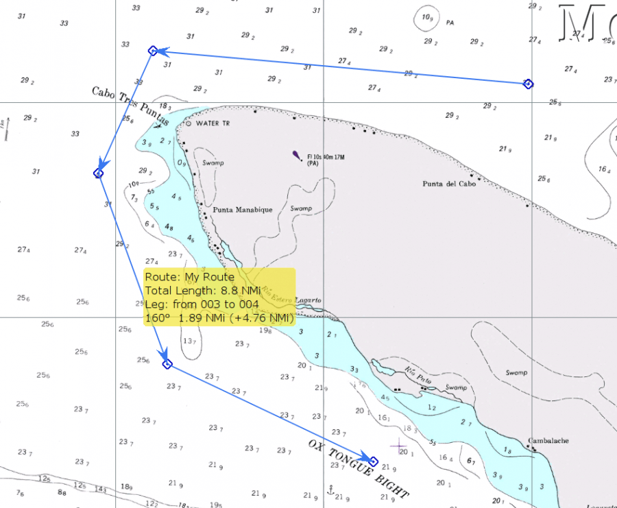
Holding the cursor over the route brings up a roll-over info. The name of the route, if it is set in the properties dialog, the total length of the route, the course and distance for the leg under the cursor and distance run so far along the route, to the first waypoint in the current leg.
Looking at the four legged route above. The total distance is 8.8 NMi. The third leg is 1.89 NMi i true direction 160° and the accumulated distance in the first two legs is 4.76 NMi.
If your desired route extends off the currently displayed chart, move the route cursor in the desired direction and the display will automatically pan to show the area. You can zoom in and out with the mouse scroll wheel or keyboard +/- keys during route creating. You can also right click and select 'MAX DETAIL HERE' or 'Scale Out' during route creation. When finished right click and choose end route from the context menu, alternatively just press the “Esc” key.
You should now have an inactive (Blue) route. Active routes are Red, inactivated routes are Blue.
Right-clicking on a route brings up a focused menu
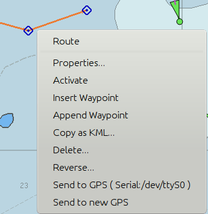
To prevent deleting a route by mistake, a confirmation dialog is activated when pressing “Delete…” if the box “Confirm deletion of tracks and routes” is ticked in Options→User Interface. If a waypoint is deleted, the rightclick menu will have “Undo Delete Waypoint” in the rightclick menu, with a hotkey Ctrl + Z.
Multiple Routes
In OpenCPN multiple routes can be handled in a couple of different ways.
Many routes can be created in a session or imported into a session.
The visibility of every route is controlled in the Route Manager. There is an “eye” to the far left on the line for each route. This works as a toggle switch. A PLAIN Eye means that the route is visible, while an eye with a red cross, means that it's hidden.
This way only the route(s) of interest for the moment can be shown.
Another way is to create and export routes, and later import them when needed.
To keep the chart clear of useful, but not needed routes follow these steps:
• Create a folder called, 'GPX_Routes', or another suitable name.
• Create your route.
• Use the Route Manager to export the route, with a descriptive file name and save it in GPX_Routes.
• Delete the route from the chart.
• You can export all your routes as one big file or export and delete a route as you create them
• When needed, simply use the Route Managers “Import” Button to open the route file.
To get rid of the way points left on the chart when a route has been imported and then deleted, which may happen depending on the imported gpx file.
1. Open the Route Managers Waypoint tab and press the “Delete All” button
2. Say 'Yes' to: 'Are you sure you want to delete <ALL> waypoints?'
Saving and Loading Routes and Marks
Activating Routes and Active Route Console
Right clicking on the track, changes the color from blue to orange and brings up a comprehensive menu.
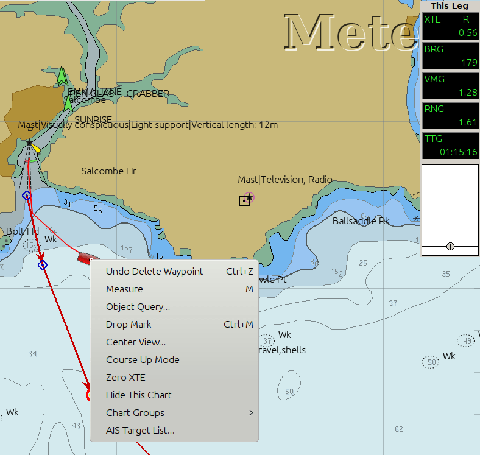
Clicking “Activate Route” or performing the same action through the Route Manager, changes the route color to red and new, route information window or “Active Route Console Window” appears on the upper right side of the display. This console displays data particular to the active leg (XTE, Bearing, VMG, RNG & TTG). Once a route is activated, you are presented with the choice of “Deactivate Route” in the different menus.
There is one unique item in the route focused right-click menu above.
Zero XTE Sets the present XTE (Cross Track Error) to zero. This comes in handy if you are off course following a route and want the autopilot to follow the route, but adjusted for your current position rather than the position of the last route waypoint.
Right clicking on a waypoint in a route brings up a few options, otherwise not available.
- 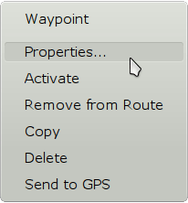
- Properties. The dialog is the same as for an individual mark.
- Activate - Gives the direction to the chosen waypoint instead of the first waypoint in the route, which is the default. Useful when joining, for example, an imported route, at an arbitrary waypoint.
- Remove from Route, but don't delete it.
- Copy as kml, for use with Qtvlm or Google Earth.
- Delete Waypoint from Route.
- Send to GPS is seen in the rightclick menus for routes and waypoints. If a port is not selected, the case in the picture above, a dialog is shown to select an output port. To change the selected port, go to the route manager and select “Send to GPS”.
- Ctrl + N, a shortcut that activates the next waypoint in an active route.
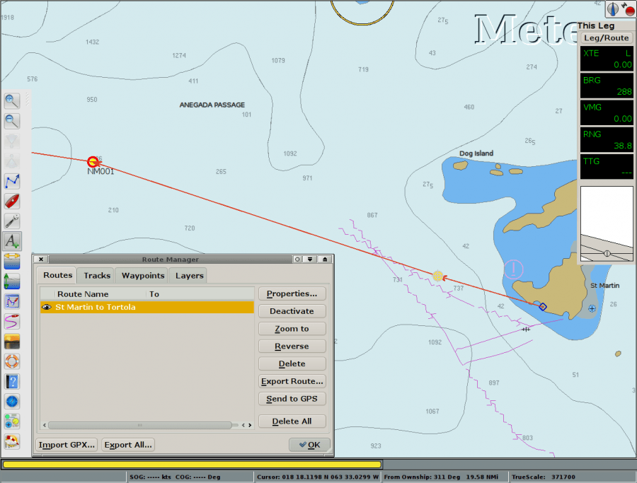
Active Route Console Window - Showing Active Leg Data
Appears in the upper right corner of the screen when a route is set to Active.
To change the Font Sizes go to Options > User Interface > Fonts and pick “Console Legend” and “Console Value”.
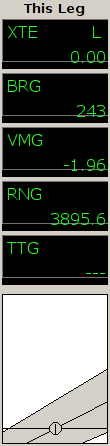
XTE Cross Track Error. How far off course your boat is. “L”=left, “R”=right
BRG Direction to next waypoint.
VMG Velocity made good to next waypoint
RNG Distance to next waypoint.
TTG Time To Go to next waypoint.
Right clicking on “This Leg” above brings up this dialog
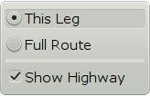
Show just the current leg or the entire route. Show or hide the highway.
Route to Autopilot
For sending a Route to an Autopilot several settings and conditions must be met.
Read more in “[opencpn:opencpn_user_manual:connections#sending_an_active_route_to_an_autopilot|Sending an Active Route to the Autopilot]]” in Options > Data Connections (at the bottom) for more information about connections and testing. Note that a Connections Output Port must be configured to send ECRMB, ECRMC and ECAPB NMEA sentences to the Auto Pilot.
Also read about Route to Autopilot in Advanced Features for more details.
Under Options Settings > Own Ship see :
- Advance route waypoint on arrival only
- Waypoint Advance (normal default)